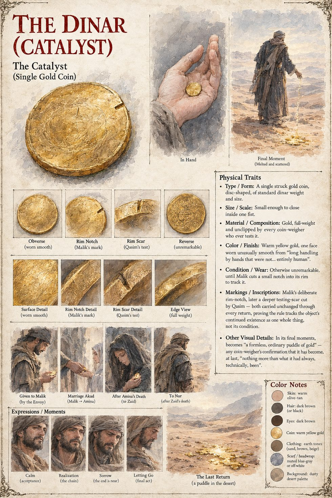

The Dinar
Catalyst, Case 3,001 · a single struck gold coin · one face worn smooth · five holders, five transfers
A single struck gold dinar of standard weight and size, small enough to close inside one fist, full-weight and unclipped under every coin-weigher who ever tests it, and in every particular a perfectly unremarkable coin, which is exactly the trouble. One face is worn smooth in a way that suggests long handling by hands that were not, Malik would later insist, entirely human. Observer 1140 gives it to Malik at dawn after a shared meal: You will not be able to keep it, but you will not be able to lose it either. Spend it as you please. It has already decided who it belongs to. Spent, it is back with its latest legitimate owner the following morning: in the exact center of Malik's palm after Hammad has dropped it into his strongbox; in Amina's cedar chest by the next dusk, though a caravan's chief factor a province away finds himself one dinar short, spends a week recounting and writes it off as his own error. The notch Malik cuts into its rim comes back in the same place at the same shallow angle every time, as if the coin that returned were the very same disk of gold, walking home each night by some road no eye could follow.
The rule behind it is not goodness, wealth or fate. After five years of inventory and nine test spends in nine towns, Qasim finds that it recognizes exactly two events. A witnessed akad passes it cleanly and permanently from one living owner to the next, as from Malik to Amina and from Nur to Qasim. Absent a word, an owner's death passes it to whoever's hand next closes around it, with no consent asked, which is how a frightened bandit and a wine-house woman each became as legitimate an owner as a shepherd's bride. Generosity does not break it, since a large sum given to four almshouses in a week came back anyway, and neither does damage: a scar Qasim cuts into it returns exactly as he left it, which tells him that the rule tracks whether one whole, nameable thing continues to exist, not what condition that thing is in. The folk story that it is the Coin With No Grave, which no murderer could keep, is wrong in a precise way, since by the coin's own rule a man who killed its owner simply became its next legitimate one.
By the Custodian log's count it passes through five holders, Malik, Amina, Zaid, Nur and Qasim, in five transfers, a count that excludes the many spend-and-return cycles in which it left and re-entered the same owner's possession. It ends in the dunes. Qasim, acting entirely outside any Cultivator direction, melts it over three days in a smith's forge into a formless, ordinary puddle of gold, carries the cooled metal three days further into open waste, to a stretch of dune that changes its shape every season, and scatters it in pieces too small for any fragment to be gathered whole. He sits through the following dawn with his palm open on his knee, and by noon his hands are still empty. Gone.
The sheet follows it from the Envoy's hand to Malik's, from Malik to Amina in the marriage akad, to Zaid after Amina's death and to Nur after Zaid's, and shows it in hand, front and back, in edge view, and as a small scatter of gold on the desert floor. It draws two marks on the rim, Malik's notch and a deeper testing scar from Qasim. The manuscript says Qasim scored the coin's face, not its rim, so the scar's place is the sheet's own. The reverse, drawn with a ring of lettering, is not described in the manuscript, which gives the coin only its weight, its color, its worn face and its milled edge.